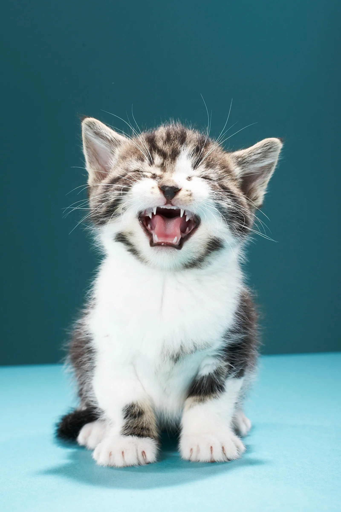
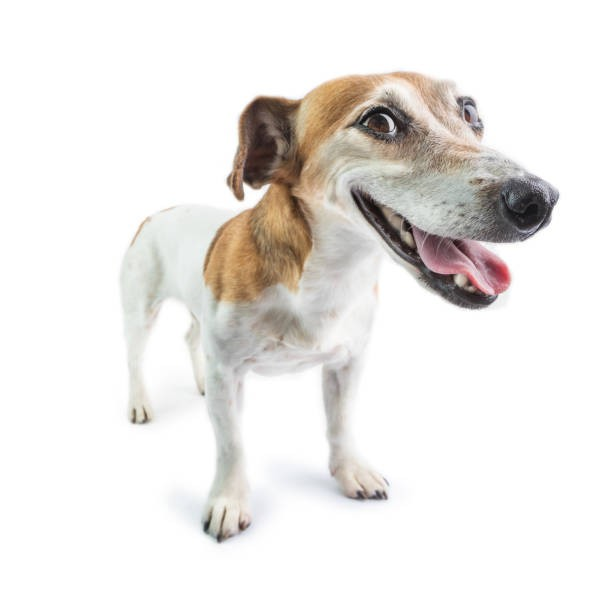

GatoGato: Luna
Luna es una gata juguetona y cariñosa que busca un hogar donde pueda recibir mucho amor y atención.
Conocer másEncuentra a tu compañero perfecto y cambia dos vidas:
la suya y la tuya.
En nuestra organización, nos dedicamos a encontrar hogares amorosos para gatos y perros que necesitan una segunda oportunidad. Explora nuestras secciones para conocer más sobre nosotros, cómo adoptar y ver casos de éxito de adopciones anteriores.
Si estás interesado en adoptar, visita nuestras secciones de "Adopta un gato" o "Adopta un perro" para ver los animales disponibles y conocer el proceso de adopción.

GatoLuna es una gata juguetona y cariñosa que busca un hogar donde pueda recibir mucho amor y atención.
Conocer más
PerroMax es un perro enérgico y leal que necesita un dueño activo que disfrute de largas caminatas y juegos al aire libre.
Conocer más